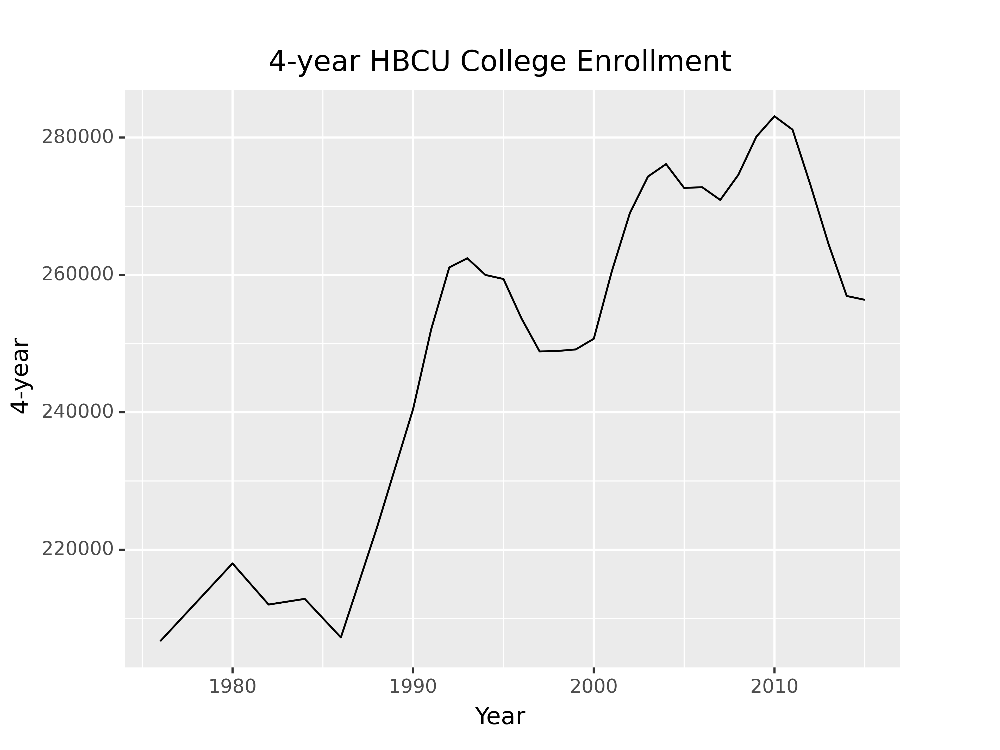

15 Data Visualization Basics
This section is intended as a very light overview of how you might create charts in R and python. Chapter 16 will be much more in depth.
15.1 Objectives
- Use ggplot2/plotnine to create a chart
- Begin to identify issues with data formatting
15.2 First Steps
Now that you can read data in to R and python and define new variables, you can create plots! Data visualization is a skill that takes a lifetime to learn, but for now, let’s start out easy: let’s talk about how to make (basic) plots in R (with ggplot2) and in python (with plotnine, which is a ggplot2 clone).
Let’s work with Historically Black College and University enrollment.
R:
Python:
import pandas as pd
from plotnine import *
hbcu_all = pd.read_csv('https://raw.githubusercontent.com/rfordatascience/tidytuesday/master/data/2021/2021-02-02/hbcu_all.csv')ggplot2 and plotnine work with data frames. If you pass a data frame in as the data argument, you can refer to columns in that data with “bare” column names (you don’t have to reference the full data object using df$name or df.name; you can instead use name or "name"):
R:
ggplot(hbcu_all, aes(x = Year, y = `4-year`)) + geom_line() +
ggtitle("4-year HBCU College Enrollment")
Python:
ggplot(hbcu_all, aes(x = "Year", y = "4-year")) + geom_line() + \
ggtitle("4-year HBCU College Enrollment")
## <ggplot: (8786300850080)>
If your data is in the right format, ggplot2 is very easy to use; if your data aren’t formatted neatly, it can be a real pain. If you want to plot multiple lines, you need to either list each variable you want to plot, one by one, or (more likely) you want to get your data into “long form”. You don’t need to know exactly how this works, but it is helpful to see the difference in the two datasets:
R:
library(tidyr)
hbcu_long <- pivot_longer(hbcu_all, -Year, names_to = "type", values_to = "value")
head(hbcu_all)
## # A tibble: 6 × 12
## Year Total e…¹ Males Females 4-yea…² 2-yea…³ Total…⁴ 4-yea…⁵ 2-yea…⁶ Total…⁷
## <dbl> <dbl> <dbl> <dbl> <dbl> <dbl> <dbl> <dbl> <dbl> <dbl>
## 1 1976 222613 104669 117944 206676 15937 156836 143528 13308 65777
## 2 1980 233557 106387 127170 218009 15548 168217 155085 13132 65340
## 3 1982 228371 104897 123474 212017 16354 165871 151472 14399 62500
## 4 1984 227519 102823 124696 212844 14675 164116 151289 12827 63403
## 5 1986 223275 97523 125752 207231 16044 162048 147631 14417 61227
## 6 1988 239755 100561 139194 223250 16505 173672 158606 15066 66083
## # … with 2 more variables: `4-year - Private` <dbl>, `2-year - Private` <dbl>,
## # and abbreviated variable names ¹`Total enrollment`, ²`4-year`, ³`2-year`,
## # ⁴`Total - Public`, ⁵`4-year - Public`, ⁶`2-year - Public`,
## # ⁷`Total - Private`
head(hbcu_long)
## # A tibble: 6 × 3
## Year type value
## <dbl> <chr> <dbl>
## 1 1976 Total enrollment 222613
## 2 1976 Males 104669
## 3 1976 Females 117944
## 4 1976 4-year 206676
## 5 1976 2-year 15937
## 6 1976 Total - Public 156836Python: (data look the same as in R)
hbcu_long = pd.melt(hbcu_all, id_vars = ['Year'], value_vars = hbcu_all.columns[1:11])In the long form of the data, we have a row for each data point (year x measurement type), not for each year.
R:
ggplot(hbcu_long, aes(x = Year, y = value, color = type)) + geom_line() +
ggtitle("HBCU College Enrollment")
Python:
ggplot(hbcu_long, aes(x = "Year", y = "value", color = "variable")) + geom_line() + \
ggtitle("HBCU College Enrollment") + \
theme(subplots_adjust={'right':0.75}) # This moves the key so it takes up 25% of the area
## <ggplot: (8786300674403)>